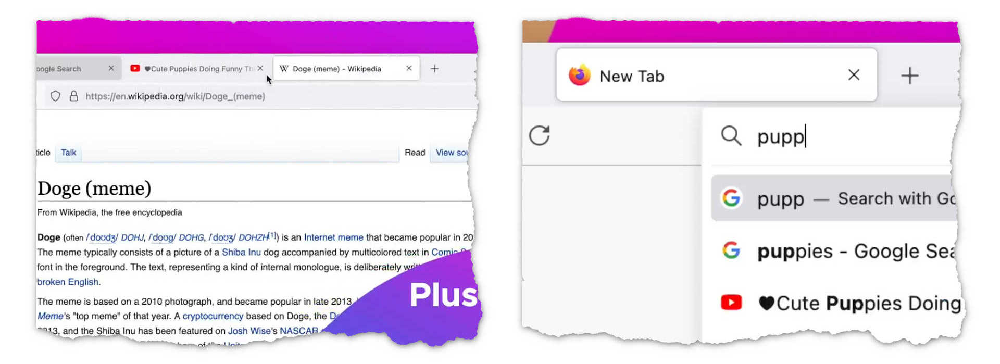
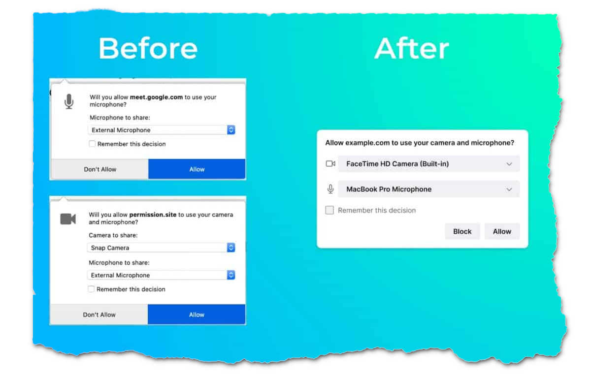
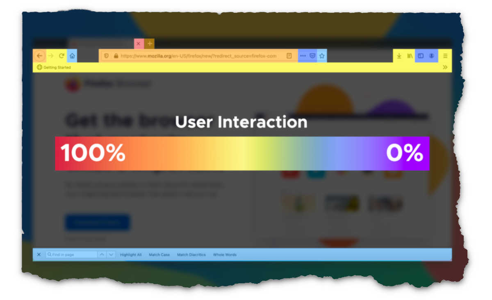

Firefox 89 is out and it’s gone through a makeover . The tabs look different, the menu is different. Lots of design changes. I don’t like how tabs look now.
The tabs were “detached from the browser” so that they’re easier to move, pull out and stuff? Doesn’t sound like a very strong reason. We’d been able to take tabs out in the past just as easily. Maybe this will have more effect (or any at all) on new Firefox users, because old users would just tear the necessary tabs out of the current window regardless of how willing or apathetic the tabs look.
The new tabs are chubbier (images from the Mozilla Blog)
And the second line indicating a video auto-play feels a weak reason just to increase the height. Wouldn’t it be simpler with just an icon on the same line?
At least the address bar highlight effect is gone. (When the address bar was highlighted, it would grow bigger, touching (overstepping even) borders of everything around.) I disliked it instantly when it got into the Developer Edition. At least now the bar stays the same size.
Speaking of the Developer Edition, the context menu has a white border around it in the Dark theme and the Alpenglow theme in the DE now. Why? I seem to recall I’ve been able to differentiate the context menu from the colors below quite well in the past. There was a distinct drop-shadow. There still is. (Although the base color of the Dark theme has changed, there seems to be a shadow in it too.) The white border somehow makes it look like high-contrast mode. It doesn’t go well with the themes.
This change may seem irrelevant in this post, but what bodes ill for Firefox blue bodes ill for Firefox orange as well.
Don’t get me wrong. There’s a ton of good changes as well. The merging of notifications will be appreciated by a lot of people, I think. The new clutter-free design should be very popular. (Though I wouldn’t know. I already have it customized.) The new icon for showing active downloads is cool.
This is good, but too much bold text (image from the Mozilla Blog)
And a lot of research has gone to back up the new changes too. They’ve looked at which parts of the browser users interact with most and then planned the new design design accordingly. So, the changes merely reflect our actions, what we prefer and what we don’t.
Poor search bar! Don't be sad, I use you! (image from the Mozilla Blog)
I love Firefox. I’ve been using it for so long. But the new tab style looks atrocious. Of course, it may be just because it’s something new, just because I’m too accustomed to the old look. It’ll probably pass quickly and I won’t even remember the old one after a few months.
And, ultimately, my opinion doesn’t matter much, because I’m not a good example of a browser’s target audience. I didn’t even notice the change in permission-asking pop-ups! Even after using Google Meet a few times.
Lots of people use Mozilla Firefox, and they have different preferences. It’s important to tend to most of their needs and provide others with ways to customize things their way. This browser has done a pretty good job over the years, I think. Some may not agree with some decisions, but what matters is whether there’s a positive effect on browsing experience after the initial denial wears off.
So, I’ll still love you, Firefox, even if you’re ugly.